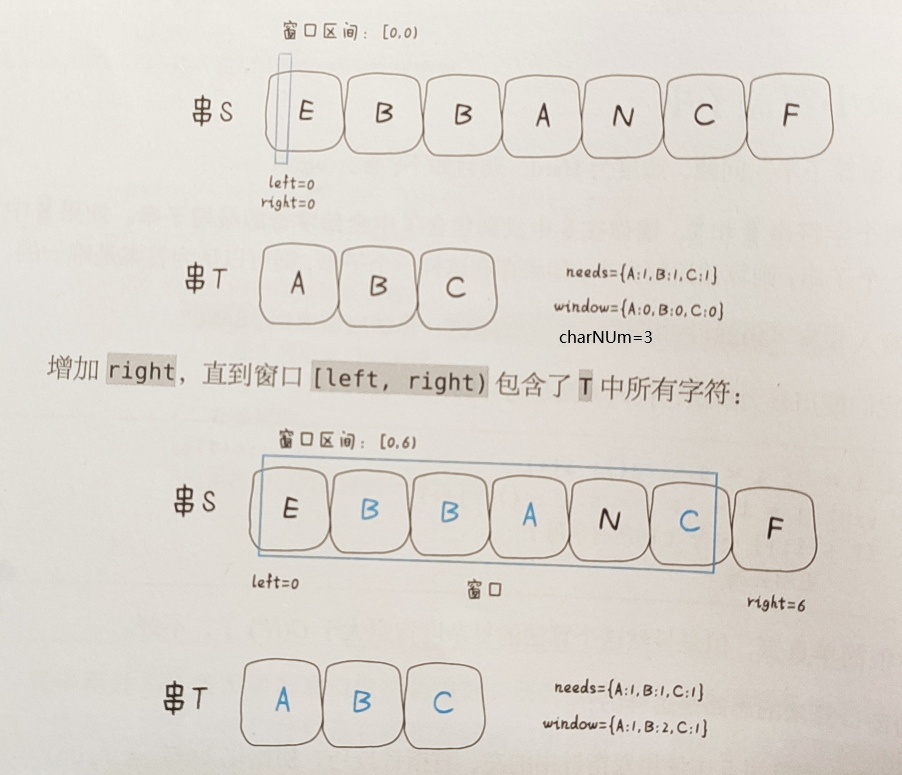

经典例题：
给你一个字符串
s、一个字符串t。返回s中涵盖t所有字符的最小子串。如果s中不存在涵盖t所有字符的子串，则返回空字符串""。

- 获取t中各字符的个数，储存到
need数组，获取t中不同字符的个数，存至charNum - 增加
right，直到[left,right)中包含t中所有字符- 如果增加的字符在
need数组中，window数组的相应字符数加一 - 当
window[c]==need[c]，即window数组中c字符的数量达到要求，match++
- 如果增加的字符在
- 当
match匹配数与t中不同字符的个数charNum相同时，缩小窗口，增加left，直至字符不再符合要求- left 不在
need数组中，直接left++ - 如果在数组中，判断是否到了最小值（
need[left]==window[left]），到了就match–，退出循环，否则window[left]--，继续left++缩小窗口
- left 不在
- 设置一个
minLength储存当前窗口的长度，begin和end储存索引，right继续向右移寻找下一个满足窗口，直到right>=s.length
public String minWindow(String s,String t){
//window数组，记录当前窗口中匹配的字符个数
int[] window = new int[256];
int[] need = new int[256];
//1.
for (char c : t.toCharArray()) {
need[c]++;
}
int charNum = 0;
for (int n : need) {
if (n > 0) {
charNum++;
}
}
//2.
int left=0,right=0,begin=0,end=0,match=0;
int minLength = Integer.MAX_VALUE;
while(right<s.length()){
char c = s.charAt(right);
if(need[c]!=0) {
window[c]++;
if(window[c]==need[c]) match++;
}
right++;
//3.
while(match==charNum){
//4.判断是否为最小窗口
if(right-left<minLength){
minLength=right-left;
end=right;
begin=left;
}
char leftChar=s.charAt(left);
if(need[leftChar]!=0){
if(window[leftChar]==need[leftChar]){
match--;
}
window[leftChar]--;
}
left++;
}
}
return minLength==charNum;
}
给定一个字符串 s 和一个非空字符串 p，找到 s 中所有是 p 的字母异位词的子串，返回这些子串的起始索引
- 也是一样滑动窗口，在每一次left收缩到最小时，判断
right-left长度是否与t.length()一样
public List<Integer> findAnagrams(String s, String p) {
List<Integer> ans=new ArrayList<>();
int[] need=new int[256];
int[] window=new int[256];
for(char c:p.toCharArray()){
need[c]++;
}
int charNum=0;
for(int n:need){
if(n>0) charNum++;
}
int left=0,right=0,match=0;
while(right<s.length()){
char c=s.charAt(right);
if(need[c]!=0){
window[c]++;
if(window[c]==need[c]) match++;
}
right++;
while(match==charNum){
char leftChar=s.charAt(left);
if(need[leftChar]!=0){
if(window[leftChar]==need[leftChar]) {
match--;
//判断，如果和长度相等，加入
if(right-left==p.length()) ans.add(left);
}
window[leftChar]--;
}
left++;
}
}
return ans;
}
给定一个字符串
s，请你找出其中不含有重复字符的 最长子串 的长度
- 不用
need和charNum，只要判断window[c]是否大于1，若大于，收缩left即可
public int lengthOfLongestSubstring(String s) {
int[] window=new int[256];
int len=0,left=0,right=0;
while(right<s.length()){
char c=s.charAt(right);
window[c]++;
while(window[c]>1){
char leftChar=s.charAt(left);
window[leftChar]--;
left++;
}
len=Math.max(len,right-left+1);
right++;
}
return len;
}